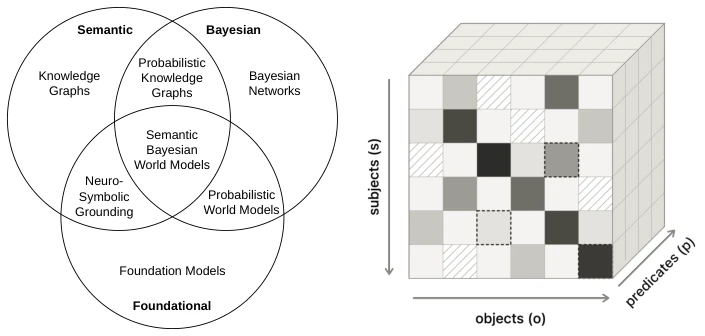

这篇论文更像是一份“宣言”而非实证研究。作者 Tommaso Soru 敏锐地指出了当前 AI 架构的致命伤：知识图谱（KG）是布尔的，大模型（LM）是概率的，两者硬拼只是数据管道。SBWM 试图用贝叶斯网络统一语义与不确定性，愿景宏大，甚至声称 LM 无法在现有组织形式下达到超人类智能。但通篇缺乏真实数据验证，更多是理论推演和思想实验。这种“神经符号 + 贝叶斯”的缝合怪思路虽好，但工程落地难度极高，目前看来更像是在为未来的 Semantic Web 画饼，而非解决当下的具身智能落地问题。其核心主张——概率必须依附于稳定标识符而非字符串——虽具启发性，但忽略了计算复杂度的爆炸风险。
This paper reads more like a "manifesto" than empirical research. Author Tommaso Soru keenly points out the fatal flaw of current AI architectures: Knowledge Graphs (KG) are Boolean, Large Models (LM) are probabilistic, and forcing them together is merely a data pipeline. SBWM attempts to unify semantics and uncertainty using Bayesian networks, with a grand vision, even claiming that LMs cannot achieve superhuman intelligence under existing organizational forms. However, the whole lacks real data verification, consisting more of theoretical deduction and thought experiments. This "neuro-symbolic + Bayesian" patchwork idea is good, but engineering implementation difficulty is extremely high; currently, it looks more like promising the future Semantic Web rather than solving current embodied AI implementation problems. Its core claim—that probability must attach to stable identifiers rather than strings—is inspiring, but ignores the explosion risk of computational complexity.
Existing systems face representation layer mismatch: KG describes facts (yes/no), LM reasons probabilities (distributions). This mismatch leads to integration being merely retrieval + context, rather than unified reasoning [27]. LM's probabilistic judgments often violate probability axioms and cannot express ontology states. Although there are attempts like BayesOWL [6], PR-OWL [4], etc., they lack large-scale data sources and declarative-level annotations. Additionally, LMs cannot reliably handle causal interventions [17]. SBWM aims to build a shared belief network, where ontology axioms constrain priors, observations update beliefs, actions intervene in the world, thereby solving decision-making problems under uncertainty. Existing KGs cannot express confidence, LMs cannot guarantee logical consistency, SBWM attempts to fill this gap, but needs to solve tractability problems.
The core is defining SBWM as a tuple M = (Σ, P0, T, O). Σ is the vocabulary and TBox, P0 is the prior distribution on the RDF graph, T is the graph edit transition kernel caused by actions, O is the observation model. Key innovations are: 1. Ontology as prior: Using axioms like rdfs:subClassOf to constrain probability monotonicity (e.g., P(Man) ≥ P(Man ∧ Ferrari)), ensuring the semantic calibration layer is differentiable and conforms to De Finetti coherence [7]. 2. Causal SPARQL: WHERE clause corresponds to conditional probability, UPDATE corresponds to Pearl's do-operator, implementing graph surgery. 3. Tensor representation: Representing graph distributions as sparse tensors, using semantic adjacency for Bayesian tensor completion, answering questions never stated. Construction process is: small model extracts triplets with log-prob -> semantic Bayesian KG -> tensor completion -> world model. Each stage is an identifiable research task, but requires commitment to carrying probability throughout rather than thresholding.

Fig. 1. Two views of a Semantic Bayesian World Model: (a) its position at the inter- section of three research traditions, and (b) a possible computational representation of its graph prior. Cells with diagonal hatch have missing values, some of which are predicted (dashed border) via neural inference.
The paper does not provide datasets or benchmarks in the traditional sense, but demonstrates capabilities through three thought experiments (vignettes). 1. Home security: Integrating police data, orders, neighbor signals, calculating thief probability rather than simple visual classification. 2. Insurance aggregation: Aggregating accident probabilities across different languages/models via entailment relations, rather than string matching. 3. Car wash test: Correcting LM planning errors (driving rather than walking) through ontology rules (domain/range). These cases demonstrate SBWM's advantages in uncertainty reasoning, cross-source belief fusion, and causal planning, but lack quantitative metrics proving superiority over existing neuro-symbolic systems or pure LM baselines. Specifically noted, belief update requires no retraining, only modifying credence, which is a huge advantage in actual systems, but computational overhead is unassessed.